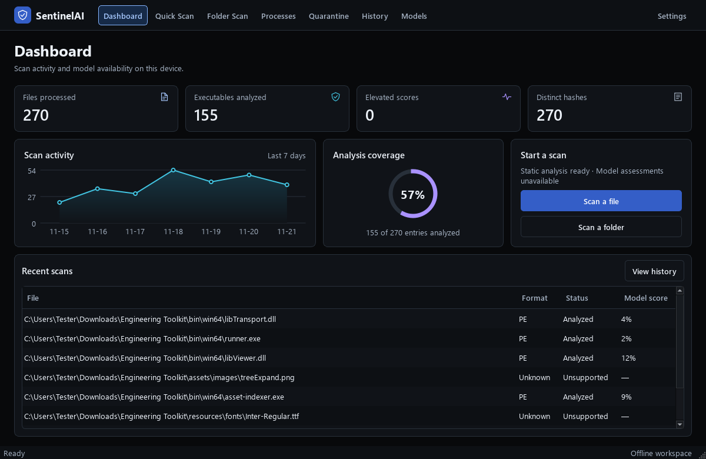

Inspect a file or folder
Review SHA-256 fingerprints, headers, sections, imports, and entropy for supported executables.
Windows PE Linux ELF
Scan a file or folder, review executable metadata and model evidence, and keep a searchable history on your device.

Review SHA-256 fingerprints, headers, sections, imports, and entropy for supported executables.
Add a compatible local model for calibrated scores and feature evidence. Scores help prioritize review.
Search local history by path, status, or exact SHA-256. Open a result and export an HTML or PDF report.
Run on Windows 10 or 11 x64. The guide covers installing from source and building the portable app.
Windows setup guideUse Python 3.12 or 3.13 with the Qt libraries for your distribution. Native build instructions are included.
Linux setup guideBuild the container locally and open the desktop in your browser. History and settings persist in a Docker volume.
Docker setup guide